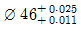
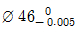
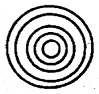
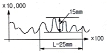
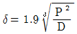
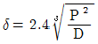
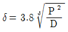
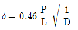

사출(프레스)금형설계기사 (2010-05-09 기출문제)
1과목: 금형설계
1. 성형기 노즐을 캐비티까지 연장하는 방식으로 러너가 짧아도 되고, 노즐에서의 압력손실이 적다는 장점이 있는 러너리스 시스템은?
- 핫 러너
- 인슐레이티드 러너
- 익스텐션 노즐
- 웰타입 노즐
(정답률: 76%)

2. 성형품 외측에 Under Cut이 있을 때, Slide Core를 사용하여 처리 할 수 있다. 이 경우 Slide Core의 행정거리를 조절할 수 있는 방법으로 가장 적합한 것은?
- Angular pin의 크기를 조절한다.
- Slide core의 길이를 조절한다.
- Angular pin의 각도와 길이를 조절한다.
- Slide core의 길이와 높이를 조절한다.
(정답률: 93%)
3. 언더컷 처리 금형의 특징에 대하여 설명한 것 중 틀린 것은?
- 구조가 복잡하다.
- 고장이 많다.
- 한 공정으로 완성품이 나온다.
- 성형사이클이 단축된다.
(정답률: 86%)
4. 다음 중 팬 게이트(fan gate)에 대한 설명으로 틀린 것은?
- 캐비티로 향해 있으며 부채꼴로 펼쳐진 게이트이다.
- 큰 평판 형상에 균일하게 충전하는데 적합한 게이트이다.
- 게이트 부근의 결함을 최소로 하는 데에 가장 효과가 있는 게이트 이다.
- 성형품을 밀어낼 때, 자동으로 게이트가 절단된다.
(정답률: 86%)
5. 금형캐비티 내의 평균압력이 100 kgf/cm2 이고, 캐비티의 투영면적이 314cm2 이라면, 이때 형체력은 얼마인가?
- 100 ton
- 3.14 ton
- 31.4 ton
- 314 ton
(정답률: 87%)
6. 가이드 핀과 가이드 부시의 역할로 가장 적합한 것은?
- 고정측과 가동측의 안내와 금형 보호 역할
- 충전되는 응용수지의 흐름, 방향 및 유량 제어 역할
- 수지의 온도를 상승시켜 플로마크나 웰드라인 경감 역할
- 성형품의 균열 스트레스 휨 방지 역할
(정답률: 93%)
7. 이젝터 핀 설계 시 고려사항으로 맞는 것은?
- 가능한 게이트 근처에 설치한다.
- 에어나 가스가 모이는 곳에는 설치하지 않는다.
- 단붙이 이젝터 핀의 작은 지름부의 길이는 길수록 좋다.
- 성형품의 이형저항의 밸런스가 유지되도록 한다.
(정답률: 83%)
8. 성형품에서 구멍과 구멍의 중심거리는 구멍지름의 몇 배 이상이 가장 적절한가?
- 2배
- 3배
- 4배
- 5배
(정답률: 85%)
9. 러너리스 금형의 특징을 설명한 것 중 틀린 것은?
- 자동화 성형 작업을 할 수 있다.
- 생산성을 향상시킬 수 있다.
- 성형재료의 손실을 절감할 수 있다.
- 성형품의 형상 및 사용수지에 제약을 받지 않는다.
(정답률: 91%)
10. 수지의 수축률이 커서 발생한 수축현상(sink mark)을 개선하기 위한 방법으로 가장 적합한 것은?
- 사출압력을 높인다.
- 수지온도를 높인다.
- 냉각시간을 줄인다.
- 이형제를 바른다.
(정답률: 78%)
11. 블랭킹가공으로 두께가 2mm이고, 직경이 30mm인 제품을 만들려고 할 때, 펀치의 직경으로 가장 적합한 것은? (단, 편측 클리어런스(C)는 3%로 한다.)
- 28.02mm
- 29.88mm
- 30.00mm
- 30.02mm
(정답률: 86%)
12. 굽힘 가공에서 제품의 스프링백에 영향을 미치지 않는 인자는?
- 굽힘반경
- 클리어런스
- 전단각
- 가압속도
(정답률: 76%)
13. 드롤잉률0.6 재드로잉률 0.7을 기준으로 하여 직경 200mm의 블랭크 소재를 직경 60mm의 원통용기로 성형코자 한다. 몇 번의 공정으로 성형이 되는가?
- 3회
- 4회
- 5회
- 6회
(정답률: 86%)
14. 드로잉금형에서 용기의 형상이 원통형이고 일정한 두께로 아이어닝 할 경우 일반적인 클리어런스(Cp)의 값은?
- Cp ≒ ( 1.1 ~ 1.2 ) t
- Cp ≒ ( 1.4 ~ 2.0 ) t
- Cp ≒ ( 0.1 ~ 0.5 ) t
- Cp ≒ ( 2.5 ~ 2.8 ) t
(정답률: 86%)
15. 다음 중 공정수에 상당하는 프레스 기계를 병렬로 배치한 프레스라인을 통해 가공제품을 이송하여(반자동, 전자동) 각 기계간을 흐르게 하는 가공방법은?
- 드로잉 가공
- 트랜스퍼 가공
- 파인 블랭킹 가공
- 트리밍 가공
(정답률: 91%)
16. 프레스 작업에 사용되는 간이 금형의 특징이 아닌 것은?
- 정밀도가 높다.
- 제작기간이 짧다.
- 금형구조가 단순하다.
- 소량생산에 적합하다.
(정답률: 87%)
17. 프레스 램을 하사점까지 내린 상태에서 프레스 램 밑면과 볼스터 윗면 사이의 직선거리를 무엇이라고 하는가?
- 슬라이드 조절량
- 하중 능력
- 스트로크 수
- 다이하이트
(정답률: 89%)
18. 다음 중 프레스 금형에서 전단하중, 전단작업량, 단면의 형상에 가장 큰 영향을 미치는 것은?
- 윤활에 의한 영향
- 소재지지 방법에 의한 영향
- 다이 재질에 의한 영향
- 틈새에 의한 영향
(정답률: 83%)
19. 프레스 기계의 좌측에 붙어 있는 이송 롤 장치를 이용하여 소재를 좌측에서 우측으로 이송시키면서 연속 작업을 하고자한다. 이를 위한 적당한 다이세트 형식이 아닌 것은?
- BB형
- CB형
- DB형
- FB형
(정답률: 67%)
20. 펀치와 다이의 날 맟춤 방법에 해당되지 않는 것은?
- 시그네스 테이프를 이용하는 방법
- 광선을 이용하는 방법
- 끼워 맞추기를 쓰는 방법
- 광명단을 사용하는 방법
(정답률: 76%)
2과목: 기계제작법
21. 다음 중 공작기계에서 절삭을 위한 3자기 기본운동에 해당되지 않는 것은?
- 절삭운동
- 회전운동
- 이송운동
- 위치조정운동
(정답률: 75%)
22. 다음 래핑(lapping)작업에 관한 설명 중 틀린 것은?
- 래핑의 압력설정시 랩제의 입자가 크면 압력을 낮추고, 랩제의 입자가 고우면 압력을 높인다.
- 랩핑가공방법에는 손으로 하는 수가공래핑과 기계를 이용하는 기계래핑이 있다.
- 래핑유는 경유, 물, 올리브유 등을 사용한다.
- 랩제는 가공물의 재질보다 연한 것을 사용한다.
(정답률: 70%)
23. 다음 방전가공의 특징을 설명한 것 중 틀린 것은?
- 가공 부분에 변질층이 남지 않는다.
- 가공물의 경도와 관계없이 가공이 가능하다.
- 전극과 공작물에 기계적인 힘이 가해지지 않는다.
- 복잡한 형상도 정밀하게 가공할 수 있다.
(정답률: 72%)
24. NC 프로그래밍시 보조기능 중 공구 교환시 사용하는 코드는 다음 중 어느 것인가?
- M00
- M02
- M⑤
- M06
(정답률: 75%)
25. 다음 중 전주가공 방법의 특징을 설명한 것으로 틀린 것은?
- 2중, 3중의 각종 금속이 겹친 복합 제품의 가공은 곤란하다
- 제품의 크기 형상의 제한이 거의 없고, 대형도 가능하다.
- 가공이 복잡하거나 곡면이 많은 제품도 전주가공으로 쉽게 가공할 수 있다.
- 실물 모형, 글씨 등 동일 형상의 전사가공이 된다.
(정답률: 71%)
26. 지그의 사용 목적과 관계가 없는 것은?
- 전문 기술자의 능률을 향상시킨다.
- 가공물의 가공 시간을 단축함으로써 가공비를 절감 할 수 있다.
- 가공상의 정밀도를 높이고 제품의 품질을 향상시킨다.
- 가공하는 부품의 균일성을 높이고 부품의 호환성을 확보한다.
(정답률: 83%)
27. 접시머리 나사의 머리를 묻히게 원뿔형으로 자리를 만드는 가공방법은?
- 스폿 페이싱
- 카운터 보링
- 카운터 싱킹
- 리밍
(정답률: 84%)
28. 비교적 정밀도가 높고 복잡한 형상도 성형 가능한 플라스틱 성형법으로 가장 적합한 것은?
- 사출성형
- 드로잉성형
- 가스성형
- 트랜스퍼성형
(정답률: 90%)
29. 보링, 리밍, 연삭 등으로 가공된 원통내면의 진원도, 진직도 및 표면거칠기를 더욱 향상시키기 위한 것으로 공구를 공작물에 눌러 대고 회전운동과 왕복운동을 시켜 공작물을 정밀 다듬질하는 가공법은?
- 밀링
- 래핑
- 슈퍼피니싱
- 호닝
(정답률: 60%)
30. NC프로그램 작성시 직선절삭 또는 원호절삭등을 선택하는 준비기능 코드는?
- G
- M
- T
- S
(정답률: 83%)
31. 분할지그(index jig)의 설명으로 옳은 것은?
- 설치될 위치결정면에 직각으로 가공될 공작물을 유지시키는데 사용한다.
- 쉽게 휘고 얇거나 비틀리기 쉬운 공작물의 가공에 사용한다.
- 대형공작물 또는 불규칙한 형상의 공작물을 가공하는데 사용한다.
- 부품주위에 정확한 간격으로 구멍을 뚫거나 기계가공 할 때 사용한다.
(정답률: 64%)
32. 레이저 가공기에 의한 적용 분야가 아닌 것은?
- 용접
- 구멍 가공
- 절단 가공
- 너어링 가공
(정답률: 77%)
33. 프레스 가공에서 굽힘 성형 작업이 아닌 것은?
- 블랭킹가공
- 컬링가공
- 시밍가공
- 비딩가공
(정답률: 79%)
34. 치공구의 표준화 설계시 고려하지 않아도 되는 항목은?
- 치공구 부품의 표준화
- 치공구 형식의 표준화
- 치공구 재료의 표준화
- 치공구 중량의 표준화
(정답률: 81%)
35. 여러 대의 CNC공작기계를 컴퓨터로 직접 제어하는 생산관리 시스템은?
- CAM
- DNC
- FMS
- ATC
(정답률: 75%)
36. CNC 밀링 프로그램 시 사용 커터 날의 개수 10개, 지름이 100mm인 커터의 날 한 개당 이송을 0.2mm로 하고, 절삭속도 92m/min로 연강제를 절삭하는 경우 테이블의 이송속도 f는 얼마인가?
- 586 mm/min
- 692 mm/min
- 785 mm/min
- 927 mm/min
(정답률: 61%)
37. 연삭 가공시 숫돌차 표면의 기공에 칩이 끼어 연삭성이 나빠지는 형상은?
- 로우딩 현상
- 세딩 현상
- 드레싱 현상
- 트루잉 현상
(정답률: 80%)
38. 리머 작업에서 평행 날의 경우 떨림(chatter)을 피하고 정확한 가공을 하기 위한 방법으로 가장 적절한 것은?
- 날의 수를 홀수로 한다.
- 날의 수를 짝수로 한다.
- 날의 수레 관계없이 그 간격을 일정하게 한다.
- 날의 수를 짝수로 하고 그 간격을 일정하게 한다.
(정답률: 79%)
39. 다음 중 NC 가공의 장점을 설명한 것으로 틀린 것은?
- 다품종 소량 생산에 적합
- 불량품 생산의 증가
- 치공구의 제작 및 사용의 절약
- 복잡한 형상의 가공이 용이
(정답률: 92%)
40. 외경 70mm, 길이 220mm의 연강봉을 초경바이트로 절삭속도 80m/min, 이송량 0.2mm/rev로 황삭 절삭을 1회 할 때 가공시간은 약 몇 분인가?
- 1분
- 2분
- 3분
- 4분
(정답률: 55%)
3과목: 금속재료학
41. 다음 수지 중에서 비중이 가장 큰 것은?
- 폴리에틸렌 수지
- 폴리프로필렌 수지
- 염화비닐 수지
- 불소 수지
(정답률: 59%)
42. 다음 중 순철의 자기변태온도는 약 몇 도 인가?
- 210℃
- 768℃
- 910℃
- 1410℃
(정답률: 87%)
43. 열처리 작업 중 마텐자이트로 되기 위한 팽창의 시간적 차이에 따라 발생하기 쉬운 현상은?
- 질량효과
- 담금질 균일
- 노치효과
- 마퀜칭
(정답률: 62%)
44. 일반적으로 금속의 가공성이 가장 좋은 격자는?
- 체심입방격자
- 조밀육방격자
- 면심입방격자
- 정방격자
(정답률: 68%)
45. 지름 15mm의 연강봉에 500kgf의 인장하중이 적용할 때 여기에 생기는 응력은 약 몇 kgf/cm2 인가?
- 11.3
- 128
- 283
- 1132
(정답률: 76%)
46. 다음 중 열경화성 수지가 아닌 것은?
- 페놀 수지
- 염화비닐 수지
- 멜라민 수지
- 요소 수지
(정답률: 76%)
47. 베이나이트 조직을 얻기 위한 항온 열처리 조직은?
- 오스포밍
- 마아퀜칭
- 오스템퍼링
- 담금질
(정답률: 78%)
48. 페놀계 수지로 페놀, 크레졸 등과 포르말린을 반응시켜 만들었으며 전기기구용 재료, 베어링 등에 사용되는 수지는?
- 염화비닐
- 베이클라이트
- 폴리에틸렌
- 플라스틱
(정답률: 84%)
49. 연강의 용도로 가장 부적합 것은?
- 형강
- 리벳
- 레일
- 철골
(정답률: 78%)
50. 열처리에 의한 철강재료의 강화와 밀접한 관계가 있는 것은?
- 페라이트 결정립도
- 펄라이트 결정립도
- 오스테이나트 결정립도
- 시멘타이트 결정립도
(정답률: 64%)
51. 다음 중 경화된 재료에 인성을 부여하기 위해서 A1 변태점 이하로 재가열하여 행하는 열처리는?
- 침탄법
- 담금질
- 뜨임
- 질화법
(정답률: 82%)
52. 다음 금속재료 중 비중이 가장 큰 것은?
- Fe
- Al
- Pb
- Cu
(정답률: 74%)
53. 7:3 황동에 1% Sn을 첨가한 실용 특수 황동은?
- 알루미늄황동
- 애드미럴티 황동
- 톰백
- 양은
(정답률: 72%)
54. 피아노선의 조직으로 가장 적당한 것은?
- austenite
- ferrite
- sorbite
- martensite
(정답률: 84%)
55. 다음 중 가단주철을 가장 적절히 설명한 것은?
- 백주철의 시멘타이트를 열처리하여 흑연화 한 것
- 백주철의 조직을 열처리로 조대화 한 것
- 첨가 원소로 백주철의 단조가 가능케 한 것
- 내부는 흑주철이고 표피만 백주철인 것
(정답률: 70%)
56. 재료에 반복하중을 연속적으로 가하여도 파괴가 일어나지 않는 최대 하중을 무엇이라 하는가?
- 크리프 한계
- 피로 한계
- 탄성 한계
- 천이 한계
(정답률: 86%)
57. 정각 120° 의 다이아몬드 콘이나 지름 1/16″의 강구로 초하중 10kgf과 본하중을 시험편에 압입하고 그 깊이의 차이로 경도를 알아보는 재료시험법은?
- 비커스 경도시험
- 쇼어 경도시험
- 브리넬 경도시험
- 로크웰 경도시험
(정답률: 73%)
58. 다음 중 황동의 화학적 성질과 관계가 없는 것은?
- 탈아연 부식
- 고온 탈아연
- 자연 균열
- 고온취성
(정답률: 87%)
59. 순철의 자기변태와 동소변태를 설명한 것 중 틀린 것은?
- 동소변태란 결정격자가 외적 조건에 의하여 변하는 변태를 말한다.
- 자기변태도 결정격자가 변하는 변태이다.
- 동소변태점은 A3점과 A4점이 있다.
- 자기변태점은 약 768℃ 정도이며 일면 큐리(curie)점이라 한다.
(정답률: 75%)
60. 탄소강을 퀜칭(quenching)했을 때 실온 근방에서 균열이 생기는 이유를 조직학적으로 올바르게 설명한 것은?
- 외부가 급냉되어 마텐자이트 생성으로 급격히 팽창하기 때문이다.
- 외부가 급냉되어 내부보다 급격히 수축하기 때문이다.
- 외부가 먼저 수축하고 내부는 후에 수축하기 때문이다.
- 외부가 먼저 수축하고 내부는 후에 팽창하기 때문이다.
(정답률: 66%)
4과목: 정밀계측
61. 6.50 × 103 측정값의 유효 숫자는 몇 자리인가?
- 2자리
- 3자리
- 5자리
- 6자리
(정답률: 75%)
62. 헐거운 끼워 맞춤에서 구멍

, 축
일 때 최대 틈새는?- 0.001
- 0.011
- 0.014
- 0.030
(정답률: 83%)
63. 다음 중 나사의 유효경을 측정할 때 가장 정밀도가 높은 측정법은?
- 삼침법
- 공구 현미경
- 투영기
- 나사 마이크로미터
(정답률: 79%)
64. 기하공차의 종류에서 자세공차에 속하지 않는 것은?
- 경사도
- 직각도
- 동심도
- 평행도
(정답률: 83%)
65. 바깥지름, 길이, 두께 등을 검사하기 위한 평행, 평면의 내측면을 가지는 한계 게이지는?
- 봉 게이지
- 스냅 게이지
- 판형 게이지
- 테보 게이지
(정답률: 84%)
66. 피치 2.5mm 인 미터나사의 유효지름 측정시 다음 중 가장 적합한 삼침의 지름은?
- 1.486mm
- 1.328mm
- 1.443mm
- 1.238mm
(정답률: 62%)
67. 다음과 같은 원심원상의 간섭무늬가 5개 있을 때, 사용광파의 파장 λ가 0.6㎛이면, 중심부와 원 모서리부 사이의 높이차는 얼마인가?

- 2.0㎛
- 1.8㎛
- 1.5㎛
- 1.0㎛
(정답률: 71%)
68. 전기 마이크로 미터와 같이 기계적 변위를 전기적 양으로 변환하여 측정하는 측정기에 대한 설명으로 틀린 것은?
- 응답지연 시간이 짧으므로 자동검사, 자동제어에 쓰일 수 있다.
- 증폭이 쉽기 때문에 감도가 좋다.
- 신호처리는 용이하나, 연산은 곤란하다.
- 원격 측정, 원격 조정이 가능하다
(정답률: 81%)
69. 다음 측정기 중 시준기에 속하지 않는 것은?
- 현미경
- 전기 마이크로 미터
- 망원경
- 투영기
(정답률: 76%)
70. 공간측정 정밀도 U3 = (3.0 + 4L/1000)㎛ 인 3차원 좌표 측정기에서 250mm를 측정 하였을 때 예상되는 오차는?
- 1.0㎛
- 2.0㎛
- 3.0㎛
- 4.0㎛
(정답률: 57%)
71. 표면거칠기 측정에서 평가길이(evaluation legnth)에 대한 설명으로 가장 옳은 것은?
- 평가 대상 부품의 전체 길이이다.
- 평가 대상 단면 곡선을 특성화하는 불규칙성을 식별하는데 사용된 X 축 방향에서의 길이이다.
- 측정을 하기 위해 촉침이 움직인 표면의 전체 구간 길이이다.
- 평가 대상 단면 곡선을 평가하는데 사용되는 X축 방향의 길이로 하나 이상의 기준길이를 포함할 수 있다.
(정답률: 63%)
72. 그림과 같은 표면 거칠기 곡선(세로는 ×10000 배, 가로는 × 100 배)을 기록하였을 때 세로방향 길이 15mm의 실제 길이는 몇 ㎛ 인가? (단, L 는 기준길이이다.)

- 1.5㎛
- 15㎛
- 2.5㎛
- 25㎛
(정답률: 67%)
73. 사인 바(sine bar)에 관한 설명 중 틀린 것은?
- 삼각함수를 이용하여 각도를 측정하는데 사용한다.
- 5각형 모양의 블록(또는 바)이 필수 부품이다.
- 2개의 롤러가 게이지블록과 더불어 사용된다.
- 사인바의 호칭 치수는 롤러의 중심길이로 구분한다.
(정답률: 79%)
74. 원형부분을 측정하여 같은 중심을 공유해서 도형 내측에 접하는 원과 외측에 접하는 원과의 반경차가 최소가 되는 중심을 기준으로 하는 진원도 평가방법은?
- 최소자승중심법
- 최소영역중심법
- 최소외접중심법
- 최대내접중심법
(정답률: 62%)
75. 측정력에 의한 변형에서 헤르츠(Hretz)법칙에 의한 변형중 구면과 평면일 경우 단성변형량을 구하는 공식은 어느 것인가? (단 P는 측정력(kgf), D는 구면지름(mm) , L은 평면의 길이(mm), δ는 변형 길이(㎛))




(정답률: 69%)
76. 직경 20mm, 길이 1m의 연강봉의 길이를 측정할 때 0.6㎛의 압축이 있었다고 할 경우, 측정력은 몇 kgf인가? (단, 봉의 굽힘은 없으며, E= 2.1x104 kgf/mm2 이다.)(오류 신고가 접수된 문제입니다. 반드시 정답과 해설을 확인하시기 바랍니다.)
- 20.56
- 13.46
- 3.96
- 0.56
(정답률: 61%)
77. 게이지 블록 등급에서 다른 게이지 블록의 교정용으로 사용되고, 항상 교정인증서와 사용되어야 하는 게이지 블록 등급은?
- K
- 0
- 1
- 2
(정답률: 77%)
78. 최근에 많이 사용되는 자동 측정기기를 크게 공기식, 전기식, 기계적 자동 측정기의 3가지로 분류할 경우 기계적 자동 측정기인 것은?
- 공기∙전기 마이크로미터
- 잡점붙이 공기 마이크로미터
- 전기 마이크로미터
- 접점붙이 다이얼게이지
(정답률: 66%)
79. 수준기를 1눈금이 2㎜이고 감도가 1’이 되게 설계하고자 할 때 기포관의 곡률반경은?
- 4.5m
- 5.6m
- 6.9m
- 7.5m
(정답률: 65%)
80. 표준형 마이크로미터의(75mm ~ 100mm)의 지시범위는?
- 25mm
- 75mm
- 100mm
- 75mm ~ 100mm
(정답률: 78%)